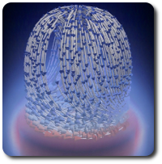
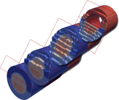
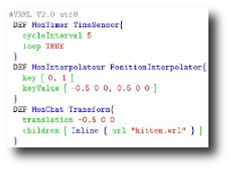

I joined the CNRS
as a
permanent researcher in October 2010.
Since September 2014, I am a faculty member of the
Computer Science Department (LIP6,
APR team) of
Sorbonne Universite.
From 2010 to 2014, I was a faculty
member of the
TII Team
of the
LTCI
lab
at Telecom ParisTech.
Prior to my CNRS tenure, I held a postdoctoral research associate position
at the
Scientific Computing and
Imaging Institute at the University of
Utah. I
defended my Ph.D. thesis in October 2008 at the
University of Lille.
My research interests include Topological Data Analysis and its applications in scientific data analysis and visualization.
I'm always looking for talented and motivated students to work with. Feel free to send me internship applications.
My research interests include Topological Data Analysis and its applications in scientific data analysis and visualization.
I'm always looking for talented and motivated students to work with. Feel free to send me internship applications.
News
| · We have several open internship positions (master2 level, with possible Ph.D. follow-up): 1, 2, 3, 4 | [Nov 12, 2019] |
| · Join us on Sunday morning at IEEE VIS for our TTK tutorial. Bring your laptop! | [Oct 14, 2019] |
| · Our IEEE LDAV 2019 paper has been awarded the Best Paper Award! | [Oct 11, 2019] |
| · Steve Oudot and I are hiring a post-doc to do TDA research! Please contact us if interested. | [Oct 2, 2019] |
| · Our paper on Topological Data Analysis for viscous fingering has been accepted to IEEE LDAV 2019! | [Aug 20, 2019] |
| · Our IEEE VIS 2019 paper has been awarded the Best Paper Honorable Mention Award! | [Jul 17, 2019] |
| · Our paper on Wasserstein barycenters of Persistence Diagrams has been accepted to IEEE VIS 2019! | [Jul 11, 2019] |
| · Check out our early results on parallel Reeb graph computation. Accepted to EGPGV 2019. | [May 3, 2019] |
| · Our paper on task-based contour tree computation has been accepted to IEEE TPDS! | [Jan 24, 2019] |
| · Our paper on critical point variability in ensembles has been certified replicable! | [Nov 30, 2018] |
| · We are recruiting a research engineer to work on Topological Data Analysis in TTK! | [Nov 21, 2018] |
Research |
| |
Teaching |
| |
Misc |
| |

|
Introduction to Topological Data Analysis
Master program, class webpage. Master MVA (Maths, Vision and Learning, ENS), fall 2017-present. |
|
|  |
Introduction to scientific visualization
Scientific visualization, master program, class webpage. ENSTA ParisTech, spring 2013-present. Exercise package. |
|
|  |
Domain representations
Scientific visualization, master program, class webpage. ENSTA ParisTech, spring 2013-present. Exercise package. |
|

|
Scalar field visualization
Scientific visualization, master program, class webpage. ENSTA ParisTech, spring 2013-present. Exercise package. |
|

|
Vector field visualization
Scientific visualization, master program, class webpage. ENSTA ParisTech, spring 2013-present. Exercise package. |
|

|
Tensor field visualization
Scientific visualization, master program, class webpage. ENSTA ParisTech, spring 2013-present. Exercise package. |
|
|
Surface parameterization Computer graphics, master program. Telecom ParisTech, spring 2011-present. |
||
|
Information visualization for scientific visualization Scientific visualization, graduate program. University of Utah, fall 2009. |
||
|
Introduction to volume rendering Scientific visualization, graduate program. University of Utah, fall 2009. |
||
|
Delaunay complexes Computational topology, graduate program. University of Utah, spring 2009. |
||
|
Persistent homology Computational topology, graduate program. University of Utah, spring 2009. |
||
|
Introduction to OpenGL (in French) Computer graphics, master program. Telecom Lille 1, fall 2007. |
||
|  |
Introduction to VRML (in French) Computer graphics, master program. Telecom Lille 1, fall 2007. |
|
|
Introduction to video processing (in French) Image processing, master program. Telecom Lille 1, fall 2005. Exercise package |
||
Updated on November 13, 2019.